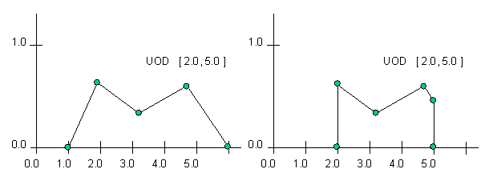
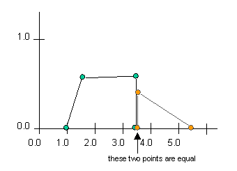

nrc.fuzzy
Class FuzzySet
java.lang.Object
|
+--nrc.fuzzy.FuzzySet
- All Implemented Interfaces:
- java.lang.Cloneable, java.io.Serializable
- Direct Known Subclasses:
- LFuzzySet, LRFuzzySet, RFuzzySet
- public class FuzzySet
- extends java.lang.Object
- implements java.lang.Cloneable, java.io.Serializable
A fuzzy set is a mapping of a set of real numbers onto a membership value
in the range [0, 1]. In this fuzzy package a fuzzy set is represented by
a set of pairs u/x, where u is the membership value for the real number x.
We can represent the set of values as { u1/x1 u2/x2 ... un/xn }. The
x values in the set are in increasing order (x1 < x2 < ... < xn). Values prior to
x1 have the same membership value as x1 and values after xn have the same
membership value as xn. Values between xi and x(i+1) are determined by the value that
lies on the straight line between the 2 consecutive points. In effect we
are representing a graph with straight lines joining the points in the fuzzy set
with horizontal lines connecting to the first and last points. Consider the
fuzzy set { 0.0/0.3 1.0/0.5 0.0/0.7 }. As shown in the diagram below, this is a
triangular shaped fuzzy set. This is a very compact representation of a
fuzzy set. A fuzzy set with a single point, for example { 0.5/25 }, is
represents a single horizontal line (in the example a fuzzy set with
membership value of 0.5 for all x values). Note that this is not a single
point! A few examples are shown below.
A Visual Guide To FuzzySets
| FuzzySet |
Visual Representation |
|
| Simple triangular FuzzySet:
|

|
|
| Slightly more complex FuzzySET:
|

|
To simplify the creation of FuzzySets a hierarchy of subclasses have been defined.
The FuzzySets that can be built by this set of subclasses represents a fairly
complete set of common shapes. The user is able to generate further subclasses
to meet specific needs. The hierarchy is shown below.

NOTE: Although the range of allowed membership values is [0, 1], it
is possible to form FuzzySets with membership values > 1.0. There are
instances where this is desirable. For example in some approaches it is
preferred to collect the outputs of fuzzy rules by doing a 'fuzzySum' of the
resultant FuzzyValues (global contribution of rules). The fuzzySum operation
can result in FuzzySets with membership values > 1.0. When a FuzzySet is created
with a FuzzySet constructor (that uses an array of Doubles or SetPoints) the
values are restricted to being between 0 and 1. However, when the fuzzySum
operation or the methods appendSetPoint and insertSetPoint are used to
add points to the FuzzySet, membership values > 1.0 are allowed.
- See Also:
LFuzzySet,
RFuzzySet,
LRFuzzySet,
TriangleFuzzySet,
TrapezoidFuzzySet,
SingletonFuzzySet,
RectangleFuzzySet,
PIFuzzySet,
SFuzzySet,
LeftLinearFuzzySet,
ZFuzzySet,
RightLinearFuzzySet,
FuzzyVariable,
FuzzyValue,
Serialized Form
|
Nested Class Summary |
protected class |
FuzzySet.UITools
The UITools class was created to support the Fuzzy Union, Intersection
and Sum methods. |
|
Field Summary |
protected static java.lang.Boolean |
BFALSE
BFALSE and BTRUE are static Boolean constants used to avoid
generating instances of Booleans over and over. |
protected static java.lang.Boolean |
BTRUE
|
protected static boolean |
COLLINEAR_OR_PARALLEL
A constant used to flag a colinear or parallel result from the
lineSegmentIntersection method in class UITools. |
protected static int |
INCREMENT
A constant specifying the amount by which the FuzzySet will be
expanded each time an additional point is added and more space
is required to accomodate that point. |
protected static int |
INTERSECTION
A constant used to flag the Intersection of FuzzySets operation. |
protected static int |
MAX_INITIAL_POINTS
A constant specifying the maximum number of initial points in the
FuzzySet. |
protected static int |
MAXMIN
A constant used to flag the maximumOfIntersection operation. |
protected static boolean |
NO_INTERSECTION
A constant used to flag a no intersection result from the
lineSegmentIntersection method in class UITools. |
protected int |
numPoints
The numPoints variable keeps track of the number of points
contained in set, the array of SetPoints. |
protected nrc.fuzzy.SetPoint[] |
set
This is the heart of the FuzzySet, an array of SetPoints which represent
the FuzzySet. |
protected boolean |
simplified
The simplified variable is a boolean used to indicate whether
or not the FuzzySet has been 'simplied' (revove extra points in the set -- see
the simplifiySet method) |
protected static int |
SUM
A constant used to flag the Sum of FuzzySets operation. |
protected FuzzySet.UITools |
tool
A Union/Intersection tool object which provides methods required only for
Union/Intersection method functionality, and also contains variables to
keep track of the state of the Union/Intersection method. |
protected static int |
toStringPrecision
A static variable which determines how many decimal places will
be printed by the toString method of FuzzySet. |
protected static int |
UNION
A constant used to flag the Union of FuzzySets operation. |
|
Constructor Summary |
FuzzySet()
Constructs an empty FuzzySet with a default maximum number of elements
allocated for the set array. |
FuzzySet(double[] x,
double[] y,
int numPoints)
Constructs a FuzzySet containing the set of points represented
by the array of x values and the array of y values passed. |
FuzzySet(nrc.fuzzy.FuzzySet newSet)
Constructs a new FuzzySet which is essentially a copy of the
FuzzySet passed as a parameter. |
FuzzySet(int initMaxSize)
Constructs an empty FuzzySet with a specified number of elements
allocated for the set array. |
FuzzySet(nrc.fuzzy.SetPoint[] setPoints,
int numPoints)
Constructs a FuzzySet containing the set of points represented
by the array of SetPoints passed. |
|
Method Summary |
void |
appendSetPoint(double X,
double Y)
Appends the SetPoint parameter to the end of the SetPoint array which constitutes
the FuzzySet. |
void |
appendSetPoint(nrc.fuzzy.SetPoint a)
Appends the SetPoint parameter to the end of the SetPoint array which constitutes
the FuzzySet. |
double |
centerOfAreaDefuzzify(double xMin,
double xMax)
Center of Area (COA) defuzzification defuzzifies a fuzzy set returning a
floating point (double value) that represents the fuzzy set. |
int |
checkXValueOrder()
Checks to assure that all the x values of the FuzzySet are in ascending
order. |
int |
checkYValueRange()
Checks to assure that all the y values of the FuzzySet are within
the strict range of 0.0 to 1.0 inclusive, or [0.0, 1.0]. |
protected nrc.fuzzy.FuzzySet |
concat(nrc.fuzzy.FuzzySet otherSet)
Concatenates the FuzzySet passed as a parameter to this instance
of FuzzySet. |
protected nrc.fuzzy.FuzzySet |
concat(nrc.fuzzy.FuzzySet a,
nrc.fuzzy.FuzzySet b)
Concatenates the two FuzzySets passed as a parameters. |
void |
confineToXBounds(double lowXBound,
double highXBound)
Confines the FuzzySet to the x boundaries specified, usually the
Universe of Discourse. |
nrc.fuzzy.FuzzySet |
copyFuzzySet()
Returns a copy of this instance of FuzzySet. |
boolean |
equals(nrc.fuzzy.FuzzySet otherSet)
Compare this FuzzySet with another for equality. |
protected double |
findMaxYOverlapValue(nrc.fuzzy.SetPoint a,
nrc.fuzzy.SetPoint b,
nrc.fuzzy.SetPoint c,
nrc.fuzzy.SetPoint d)
Returns the maximum y value of the overlapping portion of two vertical line
segments that run in opposite directions. |
nrc.fuzzy.FuzzySet |
fuzzyComplement()
Takes the compliment of this FuzzySet. |
protected static boolean |
fuzzyEqual(double value1,
double value2)
Tests two double values for equality with a fine tolerance. |
nrc.fuzzy.FuzzySet |
fuzzyIntersection(nrc.fuzzy.FuzzySet otherSet)
Returns the intersection of this FuzzySet with the FuzzySet argument. |
static nrc.fuzzy.FuzzySet |
fuzzyIntersection(nrc.fuzzy.FuzzySet setA,
nrc.fuzzy.FuzzySet setB)
Returns the intersection set of the two FuzzySet arguments. |
protected java.lang.Object |
fuzzyIntersectionUnion(nrc.fuzzy.FuzzySet otherSet,
int op)
Returns the intersection set, the union set, the sum set or the maximum of intersection
of this FuzzySet with the FuzzySet argument, depending on the operation
specified by the op argument. |
nrc.fuzzy.FuzzySet |
fuzzyNormalize()
Normalize this FuzzySet. |
nrc.fuzzy.FuzzySet |
fuzzyScale(double yvalue)
Scale this FuzzySet. |
nrc.fuzzy.FuzzySet |
fuzzySum(nrc.fuzzy.FuzzySet otherSet)
Returns the sum of this FuzzySet with the FuzzySet argument. |
static nrc.fuzzy.FuzzySet |
fuzzySum(nrc.fuzzy.FuzzySet setA,
nrc.fuzzy.FuzzySet setB)
Returns the sum of the two FuzzySet arguments. |
nrc.fuzzy.FuzzySet |
fuzzyUnion(nrc.fuzzy.FuzzySet otherSet)
Returns the union of this FuzzySet with the FuzzySet argument. |
static nrc.fuzzy.FuzzySet |
fuzzyUnion(nrc.fuzzy.FuzzySet setA,
nrc.fuzzy.FuzzySet setB)
Returns the union set of the two FuzzySet arguments. |
nrc.fuzzy.IntervalVector |
getAlphaCut(boolean cutType,
double cut,
double minUOD,
double maxUOD)
Returns the alpha cut of this FuzzySet at the membership level specified by
the cut argument. |
double |
getArea()
Calculate the area of the fuzzy set (bounded by a minimum x value and
a maximum x value). |
double |
getArea(double xMin,
double xMax)
Calculate the area of the fuzzy set (bounded by a minimum x value and
a maximum x value). |
double |
getMaxY()
Returns the maximum membership value of the FuzzySet. |
double |
getMembership(double X)
Returns the membership value of the FuzzySet at the specified x
value. |
double |
getMinY()
Returns the minimum membership value of the FuzzySet. |
nrc.fuzzy.SetPoint |
getPoint(int i)
Returns the SetPoint at the specified index in the FuzzySet. |
protected nrc.fuzzy.IntervalVector |
getSupport(double minUOD,
double maxUOD)
Returns the support of this FuzzySet. |
protected FuzzySet.UITools |
getUITools()
Get the UITools object associated with the FuzzySet. |
double |
getX(int i)
Returns the x value of the SetPoint at the specified index in
the FuzzySet. |
double |
getXforMembership(double m)
Returns the 1st X value with the specified membership value in the FuzzySet
This is done by interpolation. |
double |
getY(int i)
Returns the y value of the SetPoint at the specified index in
the FuzzySet. |
protected boolean |
goingDown(double y1,
double y2)
Tests whether the y value parameters are in descending order. |
protected boolean |
goingUp(double y1,
double y2)
Tests whether the y value parameters are in ascending order. |
nrc.fuzzy.FuzzySet |
horizontalIntersection(double y)
Returns the horizontal intersection of the FuzzySet at the
membership level specified by the y parameter. |
protected nrc.fuzzy.FuzzySet |
horizontalIntersectionUnion(double y,
int op)
Returns the horizontal intersection or union of the FuzzySet
at the membership level specified by the y parameter. |
nrc.fuzzy.FuzzySet |
horizontalUnion(double y)
Returns the horizontal union of the FuzzySet at the
membership level specified by the y parameter. |
protected void |
incrementArrayLength()
Add space to the set array holding the SetPoints |
protected void |
incrementArrayLength(int newSize)
Add space to the set array holding the SetPoints |
void |
insertSetPoint(double X,
double Y)
Inserts the double parameters X and Y into the SetPoint array which constitutes
the FuzzySet. |
void |
insertSetPoint(nrc.fuzzy.SetPoint a)
Inserts the SetPoint parameter into the SetPoint array which constitutes
the FuzzySet. |
boolean |
isConvex()
Returns true if this FuzzySet is convex. |
boolean |
isEmpty()
Returns true if this FuzzySet is empty; in other words, if this FuzzySet does not
contain any points. |
boolean |
isNormal()
Returns true if this FuzzySet is normal. |
boolean |
isSimplified()
Returns true if this FuzzySet has been simplified; in other words, if this FuzzySet does not
contain any unnecessary points (see simplifySet method). |
double |
maximumDefuzzify(double xMin,
double xMax)
Finds the mean of maxima of a fuzzy set as the defuzzification value. |
double |
maximumOfIntersection(nrc.fuzzy.FuzzySet otherSet)
Returns the maximum membership value on the intersection of this FuzzySet with the
FuzzySet argument. |
static double |
maximumOfIntersection(nrc.fuzzy.FuzzySet setA,
nrc.fuzzy.FuzzySet setB)
Returns the maximum membership value on the intersection of the two FuzzySet arguments. |
double |
momentDefuzzify(double xMin,
double xMax)
Moment defuzzification defuzzifies a fuzzy set returning a
floating point (double value) that represents the fuzzy set. |
boolean |
noIntersectionTest(nrc.fuzzy.FuzzySet b)
Returns a tentative indication of whether or not the FuzzySets intersect. |
boolean |
nonIntersectionTest(nrc.fuzzy.FuzzySet otherSet)
Tests whether or not two FuzzySets intersect. |
java.lang.String |
plotFuzzySet(java.lang.String plotChar,
double lowX,
double highX)
Plots the fuzzy set in an ascii format producing a String that can be displayed
The string must be displayed using a non-proportional spaced font. |
static java.lang.String |
plotFuzzySets(java.lang.String plotChars,
double lowX,
double highX,
nrc.fuzzy.FuzzySet[] fSets)
Plots the fuzzy sets in an ascii format producing a String that can be displayed
The string must be displayed using a non-proportional spaced font such as courier. |
boolean |
removeSetPoint(double X,
double Y)
Find the SetPoint with x,y values in the FuzzySet and remove it if found. |
boolean |
removeSetPoint(nrc.fuzzy.SetPoint a)
Find the SetPoint in the FuzzySet and remove it if found. |
protected boolean |
sameDirection(double y1,
double y2,
double y3)
Tests whether the y values are in strictly ascending or descending order
in the order they are passed as parameters. |
protected boolean |
sameSign(double number1,
double number2)
Tests whether the two double value arguments have the same sign. |
static void |
setToStringPrecision(int numDecimalPlaces)
Sets the precision, in terms of the number of decimal places that will
be printed for each double value, of the toString method. |
protected void |
shiftArrayLeft(int index)
shifts all the SetPoint array elements which have an index value greater
than or equal to the parameter index left one position. |
protected void |
shiftArrayRight(int index)
shifts all the SetPoint array elements which have an index value greater
than or equal to the parameter index right one position. |
void |
simplifySet()
Simplifies the array of points by removing any extraneous points
from the FuzzySet. |
int |
size()
Returns the size, or the number of points, in the FuzzySet. |
protected void |
testArrayLength()
Test to see if set array of SetPoints is full and if so
increment space in array. |
java.lang.String |
toString()
Returns a string representation of the FuzzySet. |
protected void |
trimToSize()
Remove excess space that might be allocated in
the array holding the fuzzy set points. |
double |
weightedAverageDefuzzify(double xMin,
double xMax)
Finds the weighted average of the values of a fuzzy set as the
defuzzification value. |
| Methods inherited from class java.lang.Object |
clone, equals, finalize, getClass, hashCode, notify, notifyAll, wait, wait, wait |
UNION
protected static final int UNION
- A constant used to flag the Union of FuzzySets operation.
- See Also:
- Constant Field Values
INTERSECTION
protected static final int INTERSECTION
- A constant used to flag the Intersection of FuzzySets operation.
- See Also:
- Constant Field Values
SUM
protected static final int SUM
- A constant used to flag the Sum of FuzzySets operation.
- See Also:
- Constant Field Values
MAXMIN
protected static final int MAXMIN
- A constant used to flag the maximumOfIntersection operation.
- See Also:
- Constant Field Values
COLLINEAR_OR_PARALLEL
protected static final boolean COLLINEAR_OR_PARALLEL
- A constant used to flag a colinear or parallel result from the
lineSegmentIntersection method in class UITools.
- See Also:
- Constant Field Values
NO_INTERSECTION
protected static final boolean NO_INTERSECTION
- A constant used to flag a no intersection result from the
lineSegmentIntersection method in class UITools.
- See Also:
- Constant Field Values
MAX_INITIAL_POINTS
protected static final int MAX_INITIAL_POINTS
- A constant specifying the maximum number of initial points in the
FuzzySet.
- See Also:
- Constant Field Values
INCREMENT
protected static final int INCREMENT
- A constant specifying the amount by which the FuzzySet will be
expanded each time an additional point is added and more space
is required to accomodate that point.
- See Also:
- Constant Field Values
toStringPrecision
protected static int toStringPrecision
- A static variable which determines how many decimal places will
be printed by the
toString method of FuzzySet.
This precision can be set using the setToStringPrecision
method.
tool
protected transient FuzzySet.UITools tool
- A Union/Intersection tool object which provides methods required only for
Union/Intersection method functionality, and also contains variables to
keep track of the state of the Union/Intersection method.
set
protected nrc.fuzzy.SetPoint[] set
- This is the heart of the FuzzySet, an array of SetPoints which represent
the FuzzySet.
numPoints
protected int numPoints
- The
numPoints variable keeps track of the number of points
contained in set, the array of SetPoints.
BFALSE
protected static final java.lang.Boolean BFALSE
- BFALSE and BTRUE are static Boolean constants used to avoid
generating instances of Booleans over and over.
BTRUE
protected static final java.lang.Boolean BTRUE
simplified
protected boolean simplified
- The
simplified variable is a boolean used to indicate whether
or not the FuzzySet has been 'simplied' (revove extra points in the set -- see
the simplifiySet method)
FuzzySet
public FuzzySet()
- Constructs an empty FuzzySet with a default maximum number of elements
allocated for the set array. The array will have no
SetPoints in it and the size of the FuzzySet will be 0.
FuzzySet
public FuzzySet(int initMaxSize)
- Constructs an empty FuzzySet with a specified number of elements
allocated for the set array. The array will have no
SetPoints in it and the size of the FuzzySet will be 0.
- Parameters:
initMaxSize - the maximum initial size of the set array.
FuzzySet
public FuzzySet(double[] x,
double[] y,
int numPoints)
throws XValuesOutOfOrderException,
YValueOutOfRangeException
- Constructs a FuzzySet containing the set of points represented
by the array of x values and the array of y values passed. The points
of the set will be examined to make sure that the y values (membership
values) lie between 0.0 and 1.0. To create FuzzySets with membership
values > 1.0 use appendSetPoint or insertSetPoint. The x values are checked to
make sure they are in proper increasing order.
- Parameters:
x - the double array which represents the x values of the
points which are to make up the FuzzySety - the double array which represents the y values of the
points which are to make up the FuzzySetnumPoints - the int that denotes the number of points contained
in the x/y arrays
- Throws:
XValuesOutOfOrderException - if the x values in the x[]
double array are not in strictly ascending order.
YValueOutOfRangeException - if the y values in the y[]
double array are not in the strict range [0.0, 1.0].
FuzzySet
public FuzzySet(nrc.fuzzy.SetPoint[] setPoints,
int numPoints)
throws XValuesOutOfOrderException,
YValueOutOfRangeException
- Constructs a FuzzySet containing the set of points represented
by the array of SetPoints passed. The points
of the set will be examined to make sure that the y values (membership
values) lie between 0.0 and 1.0. To create FuzzySets with membership
values > 1.0 use appendSetPoint or insertSetPoint. The x values are checked to
make sure they are in proper increasing order.
- Parameters:
setPoints - the SetPoint array containing the points which
are to constitute the FuzzySetnumPoints - the number of points in the SetPoint array
- Throws:
XValuesOutOfOrderException - if the x values in the SetPoints
in the SetPoint array are not in strictly ascending order.
YValueOutOfRangeException - if the y values in the SetPoint
array are not in the strict range [0.0, 1.0].
FuzzySet
public FuzzySet(nrc.fuzzy.FuzzySet newSet)
- Constructs a new FuzzySet which is essentially a copy of the
FuzzySet passed as a parameter.
- Parameters:
newSet - the FuzzySet which will be copied to create the
new FuzzySet
equals
public boolean equals(nrc.fuzzy.FuzzySet otherSet)
- Compare this FuzzySet with another for equality.
The sets are equal only if they have the same x and y values (within an
adjustable tolerance -- see Parameters.FUZZY_TOLERANCE). Note that
it is assumed that the sets have been passed through the simplifySet
method to reduce the number of points to the minimum required to
represent the set, otherwise sets that are equivalent may not
be considered equal.
- Returns:
- true if they are equal otherwise return false.
- See Also:
Parameters
fuzzyNormalize
public nrc.fuzzy.FuzzySet fuzzyNormalize()
- Normalize this
FuzzySet.
Normalization involves identifying the point in the FuzzyValue
with the highest membership value and multiplying all the membership values
in the FuzzyValue by a scale factor such that this highest point then has
a membership value of 1.0.
- Returns:
- a newly constructed FuzzySet containing the normalization of this FuzzySet
fuzzyScale
public nrc.fuzzy.FuzzySet fuzzyScale(double yvalue)
- Scale this
FuzzySet.
Returns the fuzzy set which is scaled by:
y/maxYValueOfSet
Effectively this adjusts the set so that the maximum membership
value of the set has the value y and all other membership values
are scaled accordingly. If the membership values are all less than y
then a copy of the FuzzySet is returned (ie. it scales values down
but never up).
- Returns:
- a newly constructed FuzzySet containing the scaled version of this FuzzySet
fuzzyComplement
public nrc.fuzzy.FuzzySet fuzzyComplement()
- Takes the compliment of this
FuzzySet.
More specifically, it takes the compliment of the membership (y) values
of the SetPoints of the FuzzySet.
Mathematically (NOT), u(x) = 1 - u(x), or y = 1 - y.
This assumes that all of the membership values of the fuzzy set
are <= 1.0 and >= 0.0. If values lie outside this then values >1.0
will be set to 0.0 and those < 0.0 will be set to 1.0
- Returns:
- a newly constructed FuzzySet containing the complement of this FuzzySet
getUITools
protected FuzzySet.UITools getUITools()
- Get the UITools object associated with the FuzzySet. If
there is none allocate one.
- Returns:
- the UITools object associated with the FuzzySet
maximumOfIntersection
public double maximumOfIntersection(nrc.fuzzy.FuzzySet otherSet)
- Returns the maximum membership value on the intersection of this FuzzySet with the
FuzzySet argument. Consider
the two diagrams below. On the right appears a diagram of two sets, one set
in black with green SetPoints, and the other set in grey with orange SetPoints.
The maximum y value of the intersection is denoted by a red dot on the graph
on the right.
|
Two Sets
|
|
Two Sets showing Maximum of Intersection
|

|
|

|
- Parameters:
otherSet - the FuzzySet which is intersected with this FuzzySet to determine
the maximum y value of intersection
- Returns:
- the double value which represents the maximum y value on the intersection
of the two FuzzySets
maximumOfIntersection
public static double maximumOfIntersection(nrc.fuzzy.FuzzySet setA,
nrc.fuzzy.FuzzySet setB)
- Returns the maximum membership value on the intersection of the two FuzzySet arguments.
For a visual depiction of the max min of intersection, please see the
documentation for the method
maximumOfIntersection(FuzzySet otherSet).
- Parameters:
setA - one of the two FuzzySetssetB - one of the two FuzzySets
- Returns:
- the double value which represents the maximum y value on the
intersection of the two FuzzySets
fuzzyIntersection
public nrc.fuzzy.FuzzySet fuzzyIntersection(nrc.fuzzy.FuzzySet otherSet)
- Returns the intersection of this FuzzySet with the FuzzySet argument.
The visual representation of the intersection of two example FuzzySets
is depicted below. One set is black with green SetPoints, and the
other set is grey with orange SetPoints. The diagram on the left is
of the two FuzzySets, and the diagram on the right is of the two sets
overlaid by the intersection set in red. Intersection is synonymous
with the logical operator
AND.
|
Two Sets
|
|
Two Sets showing Intersection Set
|
|
|
|

|
- Parameters:
otherSet - the FuzzySet to be intersected with this FuzzySet.
- Returns:
- a new FuzzySet object that represents the intersection set
of the two FuzzySets
fuzzyIntersection
public static nrc.fuzzy.FuzzySet fuzzyIntersection(nrc.fuzzy.FuzzySet setA,
nrc.fuzzy.FuzzySet setB)
- Returns the intersection set of the two FuzzySet arguments.
For a visual depiction of the intersection set and more information, please see the
documentation for the method
fuzzyIntersection(FuzzySet otherSet).
- Parameters:
setA - one of the two FuzzySetssetB - one of the two FuzzySets
- Returns:
- the FuzzySet intersection set of the two FuzzySets
fuzzyUnion
public nrc.fuzzy.FuzzySet fuzzyUnion(nrc.fuzzy.FuzzySet otherSet)
- Returns the union of this FuzzySet with the FuzzySet argument.
The visual representation of the union of two example FuzzySets
is depicted below. One set is black with green SetPoints, and the
other set is grey with orange SetPoints. The diagram on the left is
of the two FuzzySets, and the diagram on the right is of the two sets
overlaid by the union set in red. Union is synonymous
with the logical operator
OR.
|
Two Sets
|
|
Two Sets showing Union Set
|
|
|
|

|
- Parameters:
otherSet - the FuzzySet to be unionized with this FuzzySet.
- Returns:
- a new FuzzySet object that represents the union set
of the two FuzzySets
fuzzyUnion
public static nrc.fuzzy.FuzzySet fuzzyUnion(nrc.fuzzy.FuzzySet setA,
nrc.fuzzy.FuzzySet setB)
- Returns the union set of the two FuzzySet arguments.
For a visual depiction of the union set and more information, please see the
documentation for the method
fuzzyUnion(FuzzySet otherSet).
- Parameters:
setA - one of the two FuzzySetssetB - one of the two FuzzySets
- Returns:
- the FuzzySet union set of the two FuzzySets
fuzzySum
public nrc.fuzzy.FuzzySet fuzzySum(nrc.fuzzy.FuzzySet otherSet)
- Returns the sum of this FuzzySet with the FuzzySet argument.
The sum of 2 fuzzy sets is a set where the membership (y) value at every x
position is the sum of the memberships values of the two sets
at the corresponding x values.
NOTE WELL: The sum can lead to FuzzySets with membership values
greater than 1.0. This is sometimes used to collect
output of fuzzy rules (global contribution) rather than doing the union
of the outputs.
- Parameters:
otherSet - the FuzzySet to be summed with this FuzzySet.
- Returns:
- a new FuzzySet object that represents the sum
of the two FuzzySets
fuzzySum
public static nrc.fuzzy.FuzzySet fuzzySum(nrc.fuzzy.FuzzySet setA,
nrc.fuzzy.FuzzySet setB)
- Returns the sum of the two FuzzySet arguments.
The sum of 2 fuzzy sets is a set where the membership (y) value at every x
position is the sum of the memberships values of the two sets
at the corresponding x values.
NOTE WELL: The sum can lead to FuzzySets with membership values
greater than 1.0. This is sometimes used to collect
output of fuzzy rules (global contribution) rather than doing the union
of the outputs.
- Parameters:
setA - one of the two FuzzySetssetB - one of the two FuzzySets
- Returns:
- the FuzzySet sum of the two FuzzySets
fuzzyIntersectionUnion
protected java.lang.Object fuzzyIntersectionUnion(nrc.fuzzy.FuzzySet otherSet,
int op)
- Returns the intersection set, the union set, the sum set or the maximum of intersection
of this FuzzySet with the FuzzySet argument, depending on the operation
specified by the
op argument. The value of the op
argument can be one of the following FuzzySet constants: UNION, INTERSECTION,
SUM, or MAXMIN.
- Parameters:
otherSet - the other FuzzySet with which to perform the specified
operation with this FuzzySetop - the int which specifies whether intersection, union, sum
or max min of intersection is to be performed
- Returns:
- an Object which can either be an
instanceof
Double or FuzzySet. If the Object is an instanceof
Double, then that Double object contains the value of the maximum
of intersection. If the Object is an instanceof
FuzzySet, then that FuzzySet object contains either an
intersection, union or sum set; any method that calls this method
is expecting one or the other.
copyFuzzySet
public nrc.fuzzy.FuzzySet copyFuzzySet()
throws java.lang.CloneNotSupportedException
- Returns a copy of this instance of FuzzySet.
- Returns:
- a copy of this FuzzySet
- Throws:
java.lang.CloneNotSupportedException - if the object to be cloned does not implement
the Cloneable Interface.
simplifySet
public void simplifySet()
- Simplifies the array of points by removing any extraneous points
from the FuzzySet. If the following cases
occur, the method takes the described actions:
- Case 1: two of the same points exist in the FuzzySet
Result: one of the points is removed
- Case 2: there are three points in a vertical line, of which all have the
same direction (either increasing or decreasing)
Result: the point between the two points with extreme y values is removed
- Case 3: there are three points in a row with the same y value
Result: the middle point is removed
- Case 4: the first two points or the last two points of the set have the same
y value
Result: the first or last point, respectively, is removed
checkXValueOrder
public int checkXValueOrder()
- Checks to assure that all the x values of the FuzzySet are in ascending
order. Returns -1 if they are ordered properly and the index of the
first of the values that is out of order if they are not.
- Returns:
- Returns -1 if all x values are ordered properly and the index of the
first of the values that is out of order if they are not
- Throws:
XValuesOutOfOrderException - if the x values of the FuzzySet are
not in strictly ascending order.
checkYValueRange
public int checkYValueRange()
- Checks to assure that all the y values of the FuzzySet are within
the strict range of 0.0 to 1.0 inclusive, or [0.0, 1.0]. Returns
-1 if they are in the correct range and the index of the
first value that is out of range if they are not.
- Returns:
- Returns -1 if all membership values are in the range [0, 1] and the index of the
first value that is out of range if they are not.
- Throws:
YValueOutOfRangeException - if the y values in the FuzzySet
are not all within the range [0.0, 1.0]
getMembership
public double getMembership(double X)
- Returns the membership value of the FuzzySet at the specified x
value. This is done by interpolation. Note that if there are
several membership values at the x value (e.g. a vertical line
at this x value) then the maximum membership value is returned).
- Parameters:
X - the x value at which to find the
membership value of the FuzzySet
- Returns:
- the membership value of the FuzzySet at the specified x value
or -1.0 if no points in the set
getXforMembership
public double getXforMembership(double m)
throws NoXValueForMembershipException
- Returns the 1st X value with the specified membership value in the FuzzySet
This is done by interpolation. Note that if there are
multiple x values with this membership value
then the only the 1st X value is returned.
Note that this is most often used to get the X value corresponding to
a membership value in a FuzzySet that is strictly increasing from 0.0 to 1.0
or strictly decreasing from 1.0 to 0.0 (e.g. an SFuzzySet or a ZFuzzySet).
- Returns:
- the 1st X value of the FuzzySet with the specified membership value
or exception if the set does not have this membership value
NoXValueForMembershipException
confineToXBounds
public void confineToXBounds(double lowXBound,
double highXBound)
throws XValuesOutOfOrderException
- Confines the FuzzySet to the x boundaries specified, usually the
Universe of Discourse. This is achieved by truncating the FuzzySet
at the x boundaries. Consider the example below:

The FuzzySet on the left is a depiction of the set before being
confined to the UOD (Universe of Discourse), and the FuzzySet to the
right is the same set after being confined. Essentially, the set
to the right is the same FuzzySet; however, all points outside
the UOD now have a membership value of zero.
Note that this is infact equivalent to doing an intersection
between the given FuzzySet and the
RectangleFuzzySet(lowXBound, highXBound), but
this is considerably more efficient.
- Parameters:
lowXBound - the low x value at which to bound the sethighXBound - the high x value at which to bound the set
- Throws:
XValuesOutOfOrderException - if low and high bounds out of order
size
public int size()
- Returns the size, or the number of points, in the FuzzySet.
- Returns:
- the integer which represents the number of points in the FuzzySet.
getX
public double getX(int i)
- Returns the x value of the SetPoint at the specified index in
the FuzzySet.
- Parameters:
i - the integer index of the SetPoint whose x value is to be returned
- Returns:
- the double x value of the SetPoint at the specified index
in the FuzzySet
- Throws:
ArrayOutOfBoundsException - if the parameter i, the
specified index, is an illegal index
getY
public double getY(int i)
- Returns the y value of the SetPoint at the specified index in
the FuzzySet.
- Parameters:
i - the integer index of the SetPoint whose y value is to be returned
- Returns:
- the double y value of the SetPoint at the specified index
in the FuzzySet
- Throws:
ArrayOutOfBoundsException - if the parameter i, the
specified index, is an illegal index
getMinY
public double getMinY()
- Returns the minimum membership value of the FuzzySet.
- Returns:
- the double value representing the minimum membership value
of the FuzzySet. If the FuzzySet is empty returns 0.0.
getMaxY
public double getMaxY()
- Returns the maximum membership value of the FuzzySet.
- Returns:
- the double value representing the maximum membership value
of the FuzzySet. If the FuzzySet is empty returns 0.0.
getPoint
public nrc.fuzzy.SetPoint getPoint(int i)
- Returns the SetPoint at the specified index in the FuzzySet.
- Parameters:
i - the index of the SetPoint to return
- Returns:
- the SetPoint in the FuzzySet at the specified index
- Throws:
java.lang.ArrayIndexOutOfBoundsException - if the parameter numPoints is
greater than the length of the SetPoint array, or the
number of SetPoints contained in the array.
setToStringPrecision
public static void setToStringPrecision(int numDecimalPlaces)
- Sets the precision, in terms of the number of decimal places that will
be printed for each double value, of the
toString method.
- Parameters:
numDecimalPlaces - the desired number of decimal places for each
double value printed by the toString
method
toString
public java.lang.String toString()
- Returns a string representation of the FuzzySet. For example, if the FuzzySet
consisted of the following points, where the format is (x, u(x)), where u(x) is
the membership value or the y value:
- (1.0, 0.0) (2.0, 1.0) (3.0, 0.0)
then the string representation takes the form: u(x)/x.
- { 0.0/1.0 1.0/2.0 0.0/3.0 }
- Overrides:
toString in class java.lang.Object
- Returns:
- the String representation of the FuzzySet
fuzzyEqual
protected static boolean fuzzyEqual(double value1,
double value2)
- Tests two double values for equality with a fine tolerance.
- Parameters:
value1 - the first double valuevalue2 - the second double value
- Returns:
true if the values are equal within a certain tolerance.
getSupport
protected nrc.fuzzy.IntervalVector getSupport(double minUOD,
double maxUOD)
- Returns the support of this FuzzySet. The support set of a FuzzySet
is the set of its elements that have a membership function other than the
trivial membership of zero.
- Returns:
- an IntervalVector object which represents the support set of this FuzzyValue,
or
null if the FuzzySet has a uniform membership value of zero.
getAlphaCut
public nrc.fuzzy.IntervalVector getAlphaCut(boolean cutType,
double cut,
double minUOD,
double maxUOD)
- Returns the alpha cut of this FuzzySet at the membership level specified by
the
cut argument. Formally, a distinction is made betweeen two
types of alpha cuts, the strong and the weak alpha cut.
The WEAK alpha cut of a FuzzySet is the set of all elements in the
Universe of Discourse for which the membership function of the FuzzySet
is greater than or equal to the cut argument.
The STRONG alpha cut of a FuzzySet is the set of all elements in the
Universe of Discourse for which the membership function of the FuzzySet
is greater than the cut argument. Note that a STRONG alpha cut
at 0.0 is equivalent to the Support of the fuzzy set)
- Parameters:
cutType - either Paramters.WEAK or Parameters.STRONG (defaults to WEAK if
any other value)cut - the double membership value at which the alpha cut is taken. The
resulting support set is the set of all elements for which the
membership value is greater than or equal to the cut value.
(normally a value between 0.0 and 1.0)minUOD - the minimum x value to be consideredmaxUOD - the maximum x value to be considered. Note if minUOD > maxUOD the values
will be switched.
- Returns:
- the IntervalVector which represents the alpha cut of this FuzzyValue
at the double value of the
cut argument, or null
if the alpha cut at the cut level results in zero intervals.
isSimplified
public boolean isSimplified()
- Returns true if this FuzzySet has been simplified; in other words, if this FuzzySet does not
contain any unnecessary points (see simplifySet method).
- Returns:
- true if this FuzzySet is empty
isEmpty
public boolean isEmpty()
- Returns true if this FuzzySet is empty; in other words, if this FuzzySet does not
contain any points.
- Returns:
- true if this FuzzySet is empty
isNormal
public boolean isNormal()
- Returns true if this FuzzySet is normal. The definition of normal is that
there is at least one point in the universe of discourse where the membership
function reaches unity (in terms of this fuzzy package, unity is equal to 1.0).
Note that since we do allow membership values to be > 1.0 to accomodate special
uses of the FuzzySets, there must be no values > 1.0 for it to be normal.
- Returns:
- true if this FuzzySet is normal
isConvex
public boolean isConvex()
- Returns true if this FuzzySet is convex. The definition of convex is that
the membership function of a convex FuzzySet does not go "up-and-down"
more than once.
- Returns:
- true if this FuzzySet is convex
sameSign
protected boolean sameSign(double number1,
double number2)
- Tests whether the two double value arguments have the same sign.
- Parameters:
number1 - one of the two double values to comparenumber2 - one of the two double values to compare
- Returns:
true if the two double values have the
same sign, ie. they are either both negative or
both positive. It is important to note that if
one of the values is zero, the method will always
return true, as this method regards
zero as being both (or neither, depending on how you
look at it) negative and positive.
sameDirection
protected boolean sameDirection(double y1,
double y2,
double y3)
- Tests whether the y values are in strictly ascending or descending order
in the order they are passed as parameters. Please see below for a
visual depiction of the situation.

- Parameters:
y1 - the first y valuey2 - the second y valuey3 - the third y value
- Returns:
true if the y values are in strictly ascending
or descending order, as shown in the diagram above
goingUp
protected boolean goingUp(double y1,
double y2)
- Tests whether the y value parameters are in ascending order. This
means that the first y value is less than the second y value.
- Parameters:
y1 - the first y valuey2 - the second y value
- Returns:
true if the first y value is less than
the second y value
goingDown
protected boolean goingDown(double y1,
double y2)
- Tests whether the y value parameters are in descending order. This
means that the first y value is greater than the second y value.
- Parameters:
y1 - the first y valuey2 - the second y value
- Returns:
true if the first y value is greater than
the second y value
horizontalUnion
public nrc.fuzzy.FuzzySet horizontalUnion(double y)
- Returns the horizontal union of the FuzzySet at the
membership level specified by the y parameter. Please see the
diagram below for a visual depiction. If y is < 0 then y is set to 0.

- Parameters:
y - the y value with which the set is being unioned
- Returns:
- a new FuzzySet object representing the horizontal
union for the FuzzySet with the y value
argument
horizontalIntersection
public nrc.fuzzy.FuzzySet horizontalIntersection(double y)
- Returns the horizontal intersection of the FuzzySet at the
membership level specified by the y parameter. Please see the
diagram below for a visual depiction. If y is < 0 then y is set to 0.

- Parameters:
y - the y value with which the set is being intersected
- Returns:
- a new FuzzySet object representing the horizontal
intersection for the FuzzySet with the y value
argument
horizontalIntersectionUnion
protected nrc.fuzzy.FuzzySet horizontalIntersectionUnion(double y,
int op)
- Returns the horizontal intersection or union of the FuzzySet
at the membership level specified by the y parameter.
Whether a horizontal intersection is performed, or a horizontal
union, is determined by the
op parameter.
If y is < 0 then y is set to 0.
- Parameters:
y - the y value with which the set is being intersected or
unionizedop - the integer which specifies the operation to perform. The
only possible values for this parameter are the constants
INTERSECTION and UNION.
- Returns:
- a new FuzzySet object that represents the horizontal union
or horizontal intersection, depending on what was requested
noIntersectionTest
public boolean noIntersectionTest(nrc.fuzzy.FuzzySet b)
- Returns a tentative indication of whether or not the FuzzySets intersect.
If this method returns
true, meaning that to its knowledge
the sets don't intersect, this can be taken for gospel. However, if the
method returns false, it is indicative that an intersection
of the FuzzySets is probable, but not certain. This is done as a fast test
for no intersection.
- Parameters:
b - a FuzzySet to be tested against this FuzzySet no intersection
- Returns:
true if the FuzzySets definitely do not intersect;
false if there is a possibility that they do
nonIntersectionTest
public boolean nonIntersectionTest(nrc.fuzzy.FuzzySet otherSet)
- Tests whether or not two FuzzySets intersect. This intersection test
is complete and thorough unlike the noIntersectionTest method. Without
dwelling on what we would intuitively know as intersection of two
FuzzySets, the more subtle differences between intersection and
nonintersection are depicted below.
|
No Overlap, No Intersection
|
Overlap, therefore Intersection
|

|

|
- Parameters:
otherSet - the other FuzzySet which might possibly intersect
with this FuzzySet
- Returns:
true if the FuzzySets do not intersect,
false if they do intersect
findMaxYOverlapValue
protected double findMaxYOverlapValue(nrc.fuzzy.SetPoint a,
nrc.fuzzy.SetPoint b,
nrc.fuzzy.SetPoint c,
nrc.fuzzy.SetPoint d)
- Returns the maximum y value of the overlapping portion of two vertical line
segments that run in opposite directions. If the line segments are in the
same direction (in other words, both ascending vertically or descending vertically)
or they do not overlap the return value is -1.0.
- Parameters:
a - the first point of the first line segmentb - the second point of the first line segmentc - the first point of the second line segmentd - the second point of the second ine segment
- Returns:
- -1.0 if the line segments are in the same direction, in other words, one
is descending and the other is ascending. This is also the return value if the
line segments do not overlap.
- the maximum y value of the two line segments.
insertSetPoint
public void insertSetPoint(nrc.fuzzy.SetPoint a)
- Inserts the SetPoint parameter into the SetPoint array which constitutes
the
FuzzySet. The new SetPoint is placed in the FuzzySet so
as to keep the x values of the set in consistently increasing order.
For example, let us pretend that the existing FuzzySet looks like this:
0/1 1/2 1/4 0.5/4 0/5 (y/x... or u(x)/x format)
If the point 0.25/1.5 was inserted by this method, the result would be:
0/1 0.25/1.5 1/2 1/4 0.5/4 0/5. If the point 0.75/4 was inserted, the
result would be: 0/1 1/2 1/4 0.5/4 0.75/4 0/5. Therefore, it is important
to note that if a point is inserted and it's x value is the same
as that of an existing point, it will be inserted into the FuzzySet at a
position after the existing point with the same x value.
- Parameters:
a - the SetPoint to be inserted into the FuzzySet
insertSetPoint
public void insertSetPoint(double X,
double Y)
- Inserts the double parameters X and Y into the SetPoint array which constitutes
the
FuzzySet. The new SetPoint consisting of the passed X and Y values
is placed in the FuzzySet so as to keep the x values of the set in consistently
increasing order.
For example, let us pretend that the existing FuzzySet looks like this:
0/1 1/2 1/4 0.5/4 0/5 (y/x... or u(x)/x format)
If the point 0.25/1.5 was inserted by this method, the result would be:
0/1 0.25/1.5 1/2 1/4 0.5/4 0/5. If the point 0.75/4 was inserted, the
result would be: 0/1 1/2 1/4 0.5/4 0.75/4 0/5. Therefore, it is important
to note that if a point is inserted and it's x value is the same
as that of an existing point, it will be inserted into the FuzzySet at a
position after the existing point with the same x value.
Also note that any membership values must be >= 0. If not they will be set to 0.
- Parameters:
X - the double x value to be inserted in the FuzzySetY - the double y value to be inserted in the FuzzySet
appendSetPoint
public void appendSetPoint(nrc.fuzzy.SetPoint a)
- Appends the SetPoint parameter to the end of the SetPoint array which constitutes
the
FuzzySet. The new SetPoint is placed in the FuzzySet so
as to keep the x values of the set in consistently increasing order. If the
x value of the SetPoint being added is < the last x value in the array it will
work backwards to place it in proper x order.
For example, let us pretend that the existing FuzzySet looks like this:
0/1 1/2 1/4 0.5/4 0/5 (y/x ... or u(x)/x format)
If the point 0.25/5.5 was appended by this method, the result would be:
0/1 1/2 1/4 0.5/4 0/5 0.25/5.5. If the point 0.75/4 was inserted, the
result would be: 0/1 1/2 1/4 0.5/4 0.75/4 0/5. Therefore, it is important
to note that if a point is appended and it's x value is the less than
that of the last point, it will be placed into the FuzzySet at a
position after all points with the x values less than or equal to it's x value.
Also note that any membership values must be >= 0. If not they will be set to 0.
- Parameters:
a - the SetPoint to be inserted into the FuzzySet
appendSetPoint
public void appendSetPoint(double X,
double Y)
- Appends the SetPoint parameter to the end of the SetPoint array which constitutes
the
FuzzySet. The new SetPoint is placed in the FuzzySet so
as to keep the x values of the set in consistently increasing order. If the
x value of the SetPoint being added is < the last x value in the array it will
work backwards to place it in proper x order.
For example, let us pretend that the existing FuzzySet looks like this:
0/1 1/2 1/4 0.5/4 0/5 (y/x ... or u(x)/x format)
If the point 0.25/5.5 was appended by this method, the result would be:
0/1 1/2 1/4 0.5/4 0/5 0.25/5.5. If the point 0.75/4 was inserted, the
result would be: 0/1 1/2 1/4 0.5/4 0.75/4 0/5. Therefore, it is important
to note that if a point is appended and it's x value is the less than
that of the last point, it will be placed into the FuzzySet at a
position after all points with the x values less than or equal to it's x value.
Also note that any membership values must be >= 0. If not they will be set to 0.
- Parameters:
X - the double x value to be inserted in the FuzzySetY - the double y value to be inserted in the FuzzySet
removeSetPoint
public boolean removeSetPoint(nrc.fuzzy.SetPoint a)
- Find the SetPoint in the FuzzySet and remove it if found.
- Parameters:
a - the SetPoint
- Returns:
- a boolean value with the following significance
- true: the point was found and removed
- false: the point did not exist in the FuzzySet and no action was taken
removeSetPoint
public boolean removeSetPoint(double X,
double Y)
- Find the SetPoint with x,y values in the FuzzySet and remove it if found.
- Parameters:
X - the double valueY - the double value
- Returns:
- a boolean value with the following significance
- true: the point was found and removed
- false: the point did not exist in the FuzzySet and no action was taken
concat
protected nrc.fuzzy.FuzzySet concat(nrc.fuzzy.FuzzySet otherSet)
- Concatenates the FuzzySet passed as a parameter to this instance
of FuzzySet. This method does not affect the FuzzySet calling
it or the FuzzySet passed to it.
- Parameters:
otherSet - the FuzzySet to concatenate to this instance of
FuzzySet
- Returns:
- a newly constructed FuzzySet which is the concatenation
of this instance with the passed FuzzySet.
concat
protected nrc.fuzzy.FuzzySet concat(nrc.fuzzy.FuzzySet a,
nrc.fuzzy.FuzzySet b)
- Concatenates the two FuzzySets passed as a parameters. This method
does not affect or alter the FuzzySets passed to it.
- Parameters:
a - the first of the FuzzySets to be concatenatedb - the second of the FuzzySets to be concatenated
- Returns:
- a newly constructed FuzzySet which is the concatenation
of the two FuzzySet parameters.
trimToSize
protected void trimToSize()
- Remove excess space that might be allocated in
the array holding the fuzzy set points.
testArrayLength
protected void testArrayLength()
- Test to see if set array of SetPoints is full and if so
increment space in array.
incrementArrayLength
protected void incrementArrayLength()
- Add space to the set array holding the SetPoints
incrementArrayLength
protected void incrementArrayLength(int newSize)
- Add space to the set array holding the SetPoints
shiftArrayLeft
protected void shiftArrayLeft(int index)
- shifts all the SetPoint array elements which have an index value greater
than or equal to the parameter
index left one position. In addition to
performing the shift, this method also decrements the count of the elements
n the array (UNLESS it is EMPTY!!).
- Parameters:
index - the index value of the first element in the array which is to be shifted.
This element and all further sequential elements in the array are shifted
down one index value.
shiftArrayRight
protected void shiftArrayRight(int index)
- shifts all the SetPoint array elements which have an index value greater
than or equal to the parameter
index right one position. In addition to
performing the shift, this method also increments the
count of the elements in the array (UNLESS it is EMPTY!!).
Important Note: any method that calls this method to make space for a new element
must necessarily call the testArrayLength method first to ensure that there
is enough room in the array for the shifting to occur.
- Parameters:
index - the index value of the first element in the array which is to be shifted.
This element and all further sequential elements in the array are shifted
up one index value.
momentDefuzzify
public double momentDefuzzify(double xMin,
double xMax)
throws InvalidDefuzzifyException,
XValuesOutOfOrderException
- Moment defuzzification defuzzifies a fuzzy set returning a
floating point (double value) that represents the fuzzy set.
It calculates the first moment of area of a fuzzy set about the
y axis. The set is subdivided into different shapes by partitioning
vertically at each point in the set, resulting in rectangles,
triangles, and trapezoids. The centre of gravity (moment) and area of
each subdivision is calculated using the appropriate formulas
for each shape. The first moment of area of the whole set is
then:
sum of ( moment(i) * area(i) ) <-- top
------------------------------
sum of (area(i)) <-- bottom
If the total area is 0 then throw an exception since the moment
is not defined.
- Parameters:
xMin - minimum x value to use when performing defuzzificationxMax - maximum x value to use when performing defuzzification
- Returns:
- the floating value that is the first moment of the fuzzy set
- Throws:
InvalidDefuzzifyException - there is no valid moment for the fuzzy set
(generally the area is 0 under the fuzzy set graph)
XValuesOutOfOrderException - occurs when the xMin parameter is
greater than or equal to the xMax parameter.
centerOfAreaDefuzzify
public double centerOfAreaDefuzzify(double xMin,
double xMax)
throws InvalidDefuzzifyException,
XValuesOutOfOrderException
- Center of Area (COA) defuzzification defuzzifies a fuzzy set returning a
floating point (double value) that represents the fuzzy set.
It calculates the x value that spilts the fuzzy set so that there
is an equal area on either side of the x value.
The set is subdivided into different shapes by partitioning
vertically at each point in the set, resulting in rectangles,
triangles, and trapezoids.
In some cases where the fuzzy set has 2 equal areas separated by
a range of x values with 0 membership values (i.e. area is 0) then
the center of area x value could be any value from the end of the non-zero
area on the left and the beginning of the non-zero area on the right.
In this case we return the middle of this span of x values with 0 membership
values. For example the fuzzy set defined by the points:
(5,0) (6,1) (7,0) (15,0) (16,1) (17,0)
could have a COA of any value from 7.0 to 15.0 since the 2 triangles
lie on either side of 7.0 and 15.0. We will return a value of 11.0 in this case.
If the total area is 0 then throw an exception since the center
of area is not defined.
- Parameters:
xMin - minimum x value to use when performing defuzzificationxMax - maximum x value to use when performing defuzzification
- Returns:
- the floating value that is the center of area (COA) of the fuzzy set
- Throws:
InvalidDefuzzifyException - there is no valid COA for the fuzzy set
(generally the area is 0 under the fuzzy set graph)
XValuesOutOfOrderException - occurs when the xMin parameter is
greater than or equal to the xMax parameter.
getArea
public double getArea()
- Calculate the area of the fuzzy set (bounded by a minimum x value and
a maximum x value). The bounds are required because the first and last
y values of the set may not be 0.0 and the area would then be infinite.
In this case the bounds are chosen to be the min and max x values of the
fuzzy set.
The set is subdivided into different shapes by partitioning
vertically at each point in the set, resulting in rectangles,
triangles, and trapezoids.
- Returns:
- the area of the fuzzy set
getArea
public double getArea(double xMin,
double xMax)
throws XValuesOutOfOrderException
- Calculate the area of the fuzzy set (bounded by a minimum x value and
a maximum x value). The bounds are required because the first and last
y values of the set may not be 0.0 and the area would then be infinite.
The set is subdivided into different shapes by partitioning
vertically at each point in the set, resulting in rectangles,
triangles, and trapezoids.
- Parameters:
xMin - minimum x value to use when performing area calculationxMax - maximum x value to use when performing area calculation
- Returns:
- the area of the fuzzy set
- Throws:
XValuesOutOfOrderException - occurs when the xMin parameter is
greater than or equal to the xMax parameter.
maximumDefuzzify
public double maximumDefuzzify(double xMin,
double xMax)
throws XValuesOutOfOrderException,
InvalidDefuzzifyException
- Finds the mean of maxima of a fuzzy set as the defuzzification value.
NOTE: This doesn't always work well because there can be x ranges
where the y value is constant at the max value and other
places where the max is only reached for a single x value.
When this happens the single value gets too much of a say
in the defuzzified value. So use moment defuzzify in cases
like this.
/------\ /\
/ \ / \
--/ \---------------/ \-------------
^ ^
| |
| | gives this as the mean of maximum
| this is more reasonable???
Centre of gravity (moment) defuzzify is likely more useful most of the time.
- Parameters:
xMin - minimum x value to use when performing defuzzificationxMax - maximum x value to use when performing defuzzification
- Returns:
- the floating value that is the first average of the maximum
values of the fuzzy set
- Throws:
InvalidDefuzzifyException - there are no points in the FuzzySet
XValuesOutOfOrderException - occurs when the xMin parameter is
greater than or equal to the xMax parameter.
weightedAverageDefuzzify
public double weightedAverageDefuzzify(double xMin,
double xMax)
throws XValuesOutOfOrderException,
InvalidDefuzzifyException
- Finds the weighted average of the values of a fuzzy set as the
defuzzification value. This is slightly different than the
maximumDefuzzify since the maximumDefuzzify uses only points that
have the same membership value (the one that is the maximum in
the set of points). The weightedAverageDefuzzify uses all of the
points with non-zero membership values and calculates the average
of the x values using the membership values as weights in this average.
NOTE: This doesn't always work well because there can be x ranges
where the y value is constant at the max value and other
places where the max is only reached for a single x value.
When this happens the single value gets too much of a say
in the defuzzified value. So use moment defuzzify in cases
like this.
/------\ /\
/ \ / \
--/ \---------------/ \-------------
^ ^
| |
| | gives this as the weighted average
| this is more reasonable???
However, it is especially effective if the output has a number of singleton
points in it. This might be, for example, when one has only singleton
values describing the output fuzzy values (Takagi-Sugeno-Kang zero order type rules).
In this case one gets a result that would be expected and one that would
result in an exception with the momentDefuzzify (area is 0) and a poor
result with the maximumDefuzzify (since only the values with the max
membership are used - 20 in the example below).
1.0 |
|
0.5 | |
| | |
--------|--------|--------|--------
0 10 20 30 40
^
|
| gives 18.57 as the weighted average
(10*0.5 + 20*1 + 30*0.25) / (0.5 + 1 + 0.25) = 18.57
Centre of gravity (moment) defuzzify is likely more useful most of the time.
- Parameters:
xMin - minimum x value to use when performing defuzzificationxMax - maximum x value to use when performing defuzzification
- Returns:
- the floating value that is the weighted average of the fuzzy set
- Throws:
InvalidDefuzzifyException - there are no points in the FuzzySet
XValuesOutOfOrderException - occurs when the MinUOD is
greater than or equal to the MaxUOD parameter (this
should never happen).
plotFuzzySet
public java.lang.String plotFuzzySet(java.lang.String plotChar,
double lowX,
double highX)
- Plots the fuzzy set in an ascii format producing a String that can be displayed
The string must be displayed using a non-proportional spaced font.
plotFuzzySets
public static java.lang.String plotFuzzySets(java.lang.String plotChars,
double lowX,
double highX,
nrc.fuzzy.FuzzySet[] fSets)
- Plots the fuzzy sets in an ascii format producing a String that can be displayed
The string must be displayed using a non-proportional spaced font such as courier.
- Parameters:
fSets - array of fuzzy sets to plot the single graph